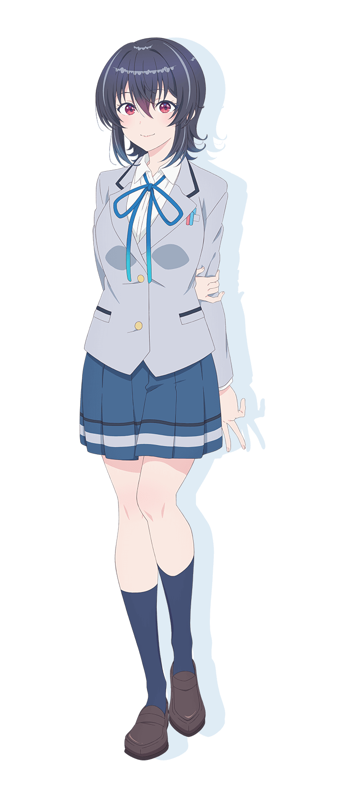
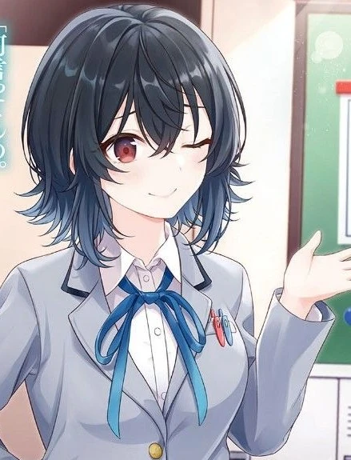

🎫 JUMAT · PULANG SEKOLAH · RAHASIA
No.2
朝凪海
Umi Asanagi — ikuti satu harinya, dari papan peringkat pagi hingga waktu rahasia Jumat malam.
SCROLL ↓

PAGI — 07:30
Papan Peringkat Kelas
Setiap pagi papan itu diperbarui. Satu nama tak pernah turun — dan satu nama tak pernah naik.
Nomor satu dan tiga tidak terverifikasi — jadi tidak dikarang. Yang pasti: nomor dua itu dia.
SIANG — 12:00
Dua Sisi Satu Umi
Siang hari ia sempurna. Sisi satunya tidak masuk papan peringkat.
Ramah ke semua orang. Berprestasi tanpa cela. Dikagumi hampir seisi kelas — dan diam-diam mencintai film B dan game.

SORE — 17:40
Golden Hour Pulang Sekolah
Scroll — matahari rendah, bayangan memanjang, serpihan perak menari.
17:40 — KORIDOR KOSONG
Bayangan Memanjang
Bel pulang berbunyi. Koridor kosong, cahaya sore masuk miring. Kamera turun mengikuti bayangan — serpihan perak menari lebih liar mengikuti kecepatan scroll-mu.
18:05 — TUJUAN RAHASIA
Bukan ke Rumah Sendiri
Setiap Jumat sore ada waktu rahasia di rumah Maki — dua teman sehobi yang tak perlu berpura-pura. Coba seret mouse — artefak menurut, lalu kembali sendiri ke pose scroll-nya.
↔ seret di ruang kosong untuk memutar
MALAM — 19:00 · JUMAT
Waktu Rahasia
Scroll — tanpa seragam sempurna, tanpa tatapan kelas. Cuma dia yang apa adanya.
Topeng nomor dua dilepas.
Ilustrasi light novel · sumber: Kura Nika Wiki (Fandom)
PENUTUP
第二の輝き
Nomor satu milik semua orang. Nomor dua — miliknya sendiri.
Umi Asanagi bersinar tanpa perlu mengalahkan siapa pun.
Sumber
- Stand art & profil: kuranika.asmik-ace.co.jp/chara (official)
- Ilustrasi LN: Kura Nika Wiki (Fandom) — Umi Asanagi
- Info karakter: Fandom, MyAnimeList, anihk, Wikipedia (ja) · CV Manaka Iwami
- 3D: Three.js r160 (di-vendor lokal) · WebGL real-time, bukan CSS